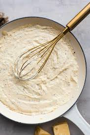

Alfredo

This is by far my favorite Dish! My wife makes the best Alfredo and i will fight any one on that point
She does not follow a recipe her self but it is simialr to this one here.
INGREDIENTS
- 1/2 cup BUTTER
- 1 1/2 cup HEAVY CREAM
- 2 tsp GARLIC MINCED
- 1/2 tsp ITALIAN SEASONING
- 1/2 tsp SALT
- 1/4 PEPPER
- 2 cups FRESHLY GRATED ASIAGO CHEESE
STEPS
- Add the butter and cream to a large skillet
- Simmer over low heat for 2 minutes
- Whisk in the garlic, italian seasoning, salt and pepper for ONE minute
- Whisk in the asiago cheese until melted
- serve IMMEDIATLEY